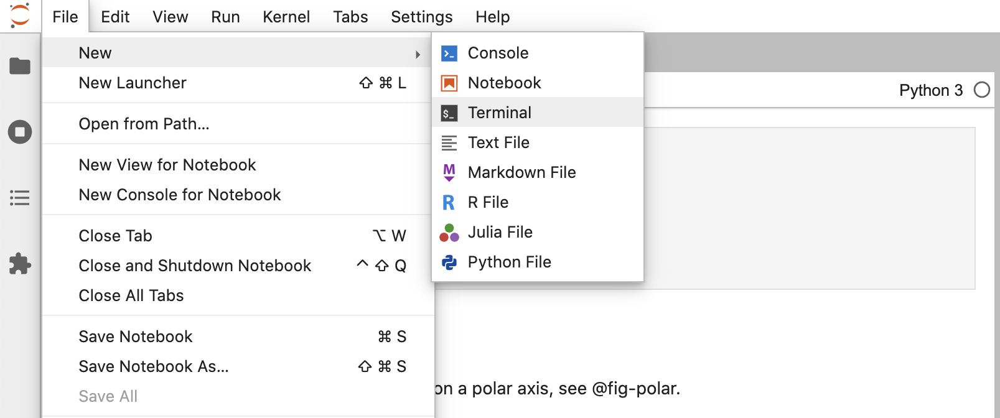
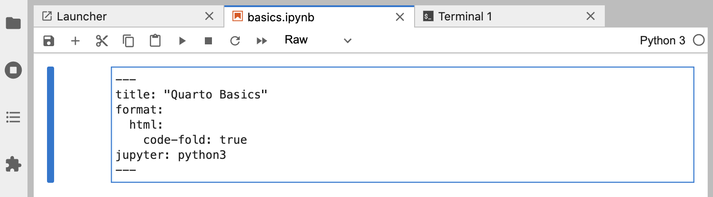
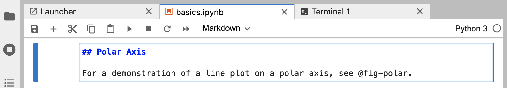

Overview
In this tutorial we’ll show you how to use Jupyter Lab with Quarto. You’ll edit code and markdown in Juptyer Lab just as you would with any notebook, and preview the rendered document in a web browser as you work.
Here’s how this will look:

The notebook is rendered into the HTML version you see on the right (it could have equally been rendered into PDF, MS Word, etc.).
This is the basic model for Quarto publishing—take a source document (in this case a notebook), and render it to a variety of output formats.
Rendering
We’ll start out by opening a notebook in Jupyter Lab and rendering it to a couple of formats. If you want to follow along step-by-step in your own environment, download this notebook:
Create a new directory to work within and copy the notebook into the directory:
mkdir -p ~/quarto-tutorial/hello
cd ~/quarto-tutorial/hello
cp ~/Downloads/polar-axis.ipynb .Now, let’s open Jupyter Lab and start working with the notebook:
python3 -m jupyter lab polar-axis.ipynb
Create a new Terminal within Jupyter Lab that you’ll use for Quarto commands:

Now let’s render the notebook to a couple of formats:
quarto render polar-axis.ipynb.ipynb --to html
quarto render polar-axis.ipynb.ipynb --to docxIf you want to try rendering to PDF, install tinytex (a LaTeX distribution) then use --to pdf:
quarto tools install tinytex
quarto render polar-axis.ipynb --to pdfNote that if you already have LaTeX installed that will work fine too (no need to install TinyTeX).
Authoring
The quarto render command is used to create the final version of your document for distribution. However, during authoring you’ll use the quarto preview command. Try it now from the Terminal with polar-axis.ipynb:
quarto preview polar-axis.ipynbThis will render your document and then display it a web browser:

Position Jupyter Lab and the browser preview side-by-side so you can see changes as you work:
Change some of the code, running the changed cell, then save the notebook. You’ll see that the preview updates immediately. This is the basic workflow for authoring with Quarto.
Cell Types
There are few different types of cells in our notebook, let’s work a bit with each type.
YAML Options
You are likely already familiar with markdown and code cells, but there is a new type of cell (“Raw”) that is used for document-level YAML options:

Try changing the code-fold option to true:
format:
html:
code-fold: trueThen save the notebook. You’ll notice that the code is shown above the plot (where previously it was hidden with a “Code” button that could be used to show it).
Markdown Cells
Markdown cells contain raw markdown that will be passed through to Quarto during rendering. You can use any valid Quarto markdown syntax in these cells. Here we specify a header and a cross-reference to the figure created in the code cell below:

Try changing the header and saving the notebook—the preview will update with the new header text.
Code Cells
Code cells you are of course already familiar with:

One new twist are the options you see at the top of the cell (label and fig-cap). Cell options are written in YAML using a specially prefixed comment (#|).
In this example, the cell options are used to make the figure cross-reference-able. Try changing the fig-cap and/or the code, running the cell, and then saving the notebook to see the updated preview.
There are a wide variety of cell options that you can apply to tailor your output. We’ll delve into these options in the next tutorial.